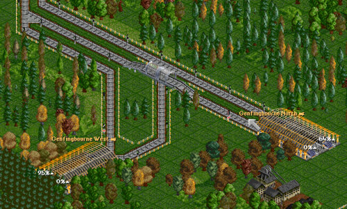
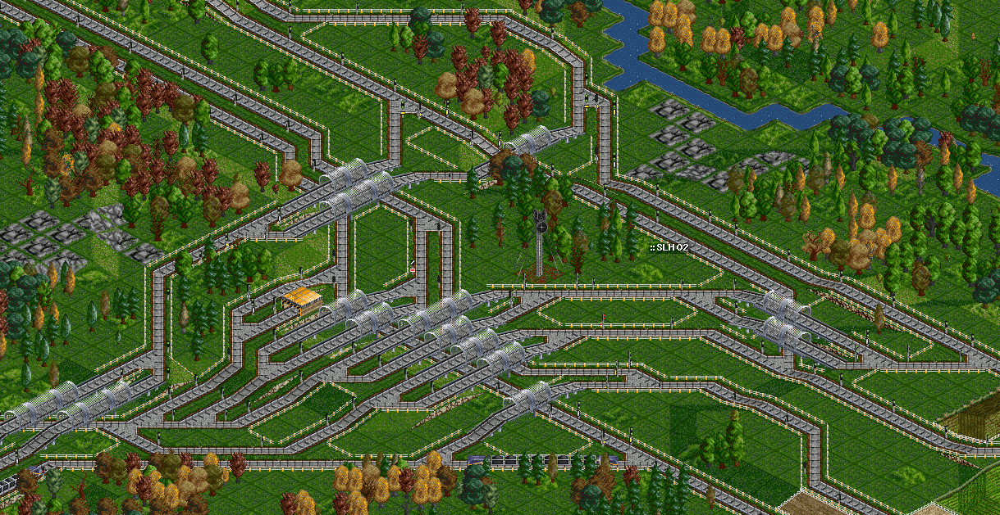

Sideline


![[image unavailable]](https://web.archive.org/web/2/http://wiki.openttdcoop.org:80/File:SL_stations_example.png){kind=link}
Sidelines are used to link primary industries (like coal mines or forests) to the mainline, and are connected to the mainline with sideline hubs. Sidelines usually have a single track per direction and service 1-10 industries in a local area. Some bigger sidelines might have two tracks per direction and up to 20 industries attached to them. New stations for industries can be connected directly to sidelines.
Things like using double bridges and curve lenghts are less important on sidelines.
Sideline stations
Primary industry stations are always connected to sidelines, and are probably the simplest things we build in #openttdcoop games. The number of platforms depends on the production rate of the farm/mine/forest, but we usually start with 2-3 platforms. Take care about the pickup rating at primary industry stations, it should be as close to 100 percent as possible to raise production.
You should always keep some space in front of the entrance to a sideline station, with space for at least 2-3 trains, but more doesn't hurt. If all platforms of the station are occupied, you might have a train which wants to enter but has to wait in front of the station until another train departs. If there is too little space between the station and the corresponding sideline for waiting trains, the trains may jam up the sideline.
Sideline hub
Full article: http://wiki.openttdcoop.org/Sideline_Hub
Sideline hubs connect sidelines to the mainline.


![[image unavailable]](https://web.archive.org/web/2/http://wiki.openttdcoop.org:80/File:SLH_example.png){kind=link}
See Also
Categories: GuidesBasic networking